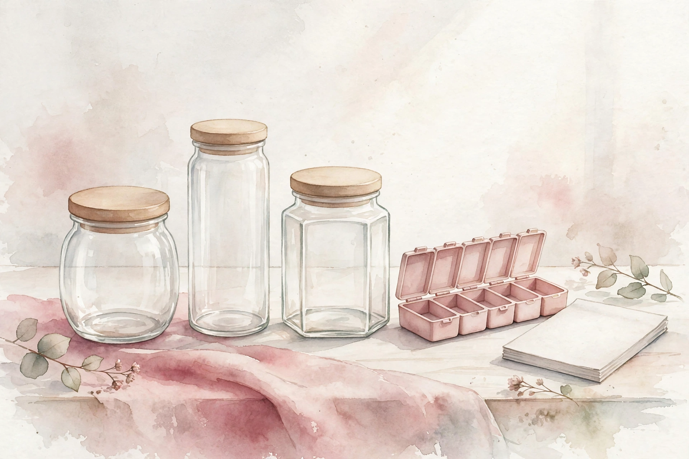

トップ ＞ インナーケア・サプリ ＞ 複数のサプリを併用する時の確認点
複数のサプリを併用する時の確認点

サプリメントを複数使っている方は少なくありません。施術のお客様でも、2〜3種類を併用している例をよく聞きます。併用そのものが悪いわけではありませんが、確認すべきポイントは増えます。この記事では、表示を使った確認の方法を整理します。
成分の重なりを、表示で比べる
最初に確認したいのは、成分の重なりです。別々の目的で買った商品でも、ビタミン類など共通する成分が両方に入っていることがあります。それぞれのパッケージの含有量表示を並べて、同じ成分が重なっていないか、重なっている場合は合計がどれくらいになるかを見ます。
含有量の単位（1粒あたり／1日分あたり）が商品ごとに違う場合は、1日分にそろえてから比べます。単位をそろえることが、比較の基本です。
目安量は「合計」で考える
各商品の目安量は、その商品単体での案内です。併用する場合は、重なった成分について「合計でどれくらい摂ることになるか」を意識する必要があります。栄養成分には、食事から摂る分も合わせた1日の摂取の目安や上限の考え方が、公的な資料で示されているものもあります。気になる場合は、消費者庁や厚生労働省などの公的な情報を確認してください。
私は、併用を始める前に、使っている商品の名前と目安量を紙に書き出すことをおすすめしています。書き出すことで、重なりが目に見える形になります。
相談先を持っておく
医薬品を服用中の方、通院中の方、妊娠中・授乳中の方は、サプリメントの併用を始める前に、医師・薬剤師等の専門家に相談してください。食品であっても、医薬品との関係は専門家の判断が必要です。また、体調に変化を感じたら、いったん使用をやめて専門家に相談するのが無難です。
サプリメントは食品であり、身体への作用を断定するものではありません。この記事は、表示を使った確認方法の一般的な案内です。個別の判断は専門家にご相談ください。
新しく1種類を足すときは、一度に複数を追加せず、1つずつ様子を見る進め方が無難です。体調の変化があったときに、どれが関係しているのかを切り分けやすくなるからです。開始した日付と商品名をメモしておくと、後から振り返るときの材料になります。私は、使っているサプリメントの一覧を、年に一度は見直すことにしています。生活が変われば、必要な確認も変わるからです。
一覧を作るときは、商品名だけでなく、購入した時期も書いておくと便利です。賞味期限の管理とあわせて、併用の全体像を1枚で把握できるようになります。
セラフィナ「併用するときは、表示を横に並べて比べるのが基本だね」